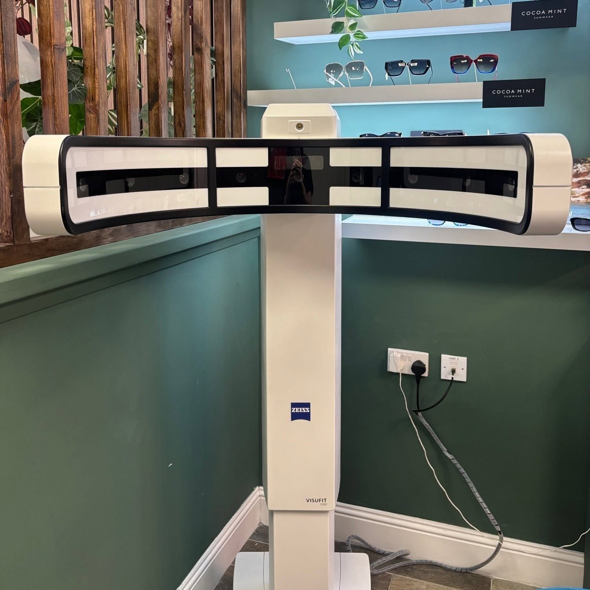

ZEISS i.Profiler plus
A 4-in-1 instrument — autorefractor, keratometer, corneal topographer and wavefront aberrometer — that maps the optical profile of your eye in seconds, for ZEISS i.Scription lenses.
Find out more
Every step is connected. Your prescription, your measurements and the exact shape of your frame travel digitally from our test room to ZEISS, where your lenses are individually calculated and made.
Your eyes are profiled with the ZEISS i.Profiler plus and your prescription refined on our ZEISS VISUPHOR digital refraction system.
Your prescription is transferred electronically from the test room to our ZEISS VISUFIT 1000 — no hand-copied numbers.
VISUFIT captures a 180° 3D image of you wearing your chosen frame, measuring its exact position in front of your eyes.
Your frame is digitally scanned here in the practice, so its exact shape is captured precisely.
Everything is combined and sent electronically to ZEISS, where your lenses are individually calculated and made for you.
Two people with the same prescription can need very different lenses. How your frame sits on your face, the distance from your eyes to the lenses, the angle and wrap of the frame and its exact shape all affect how well you see.
Especially helpful if you find night driving, headlights or dim rooms difficult.
A normal prescription is measured in quarter steps, a bit like shoe sizes: if your eye sits between two sizes, it's rounded to the nearest one. It also only corrects the “basic” focusing errors: short sight, long sight and astigmatism.
Every eye also has tiny, individual imperfections, rather like a fingerprint. In daylight your pupils are small and you barely notice them. At night your pupils open wider, and these imperfections start to show: as glare and halos around headlights and street lamps, softer contrast and vision that just doesn't feel as crisp.
Our ZEISS i.Profiler plus measures up to 1,500 points on each eye in a few seconds. ZEISS i.Scription then uses that data to fine-tune your prescription to 1/100th of a dioptre, 25 times finer than the usual quarter steps, taking your eye's individual profile into account.
i.Scription is available with ZEISS individual lenses. In ZEISS's wearer trials, 95% of people preferred their lenses with i.Scription to the same lenses without it. Ask us at your eye examination whether it would help you.
A 4-in-1 instrument — autorefractor, keratometer, corneal topographer and wavefront aberrometer — that maps the optical profile of your eye in seconds, for ZEISS i.Scription lenses.
Find out moreA digital phoropter and test chart for smooth, precise sight testing, with your results stored and shared digitally across the ZEISS system.
A high-magnification microscope with video and still-image capture, so we can record the front of your eyes and show you exactly what we see.
An image of around 82% of the retina in a single, quick capture — compared with around 15–20% for a standard retinal camera.
Find out moreCombined OCT and retinal photography, giving detailed 3D scans of the retina and optic nerve for early detection of glaucoma, macular degeneration and diabetic eye disease.
Find out moreThe gold-standard visual field test, used in hospitals worldwide to detect and monitor glaucoma and other conditions affecting your field of vision.
Find out moreNine cameras capture a 180° 3D image of you wearing your frame, using around 45 million data points for precise centration.
Find out moreYour chosen frame is digitally scanned in the practice, so its exact shape is captured and sent with your lens order.
Access to the complete ZEISS lens range, individually made using your personal data.
Find out moreBook your eye examination online in a few quick steps, or call us – we're always happy to help.